一份灵巧机器人手领域的实地指南——抓取的硬件、销售它的市场，以及衡量它的基准。整理自公开厂商数据、原始论文与第三方产品列表。
二十多个团队正竞相打造机器人手。这里精选十二款 —— 悬停任意一款查看规格，或按驱动方式筛选。随后可深入下方三卷。
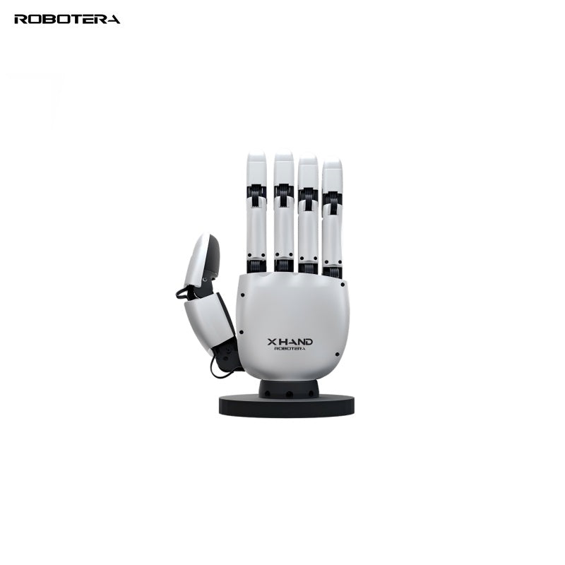
12 DOF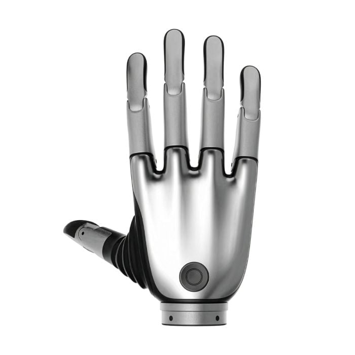
21 DOF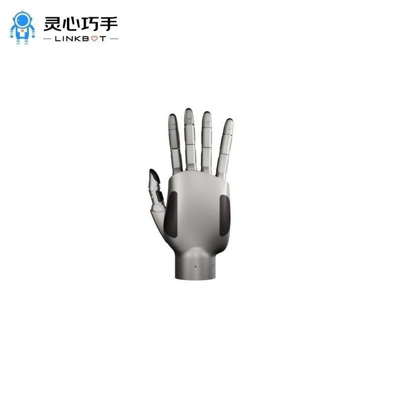
20 DOF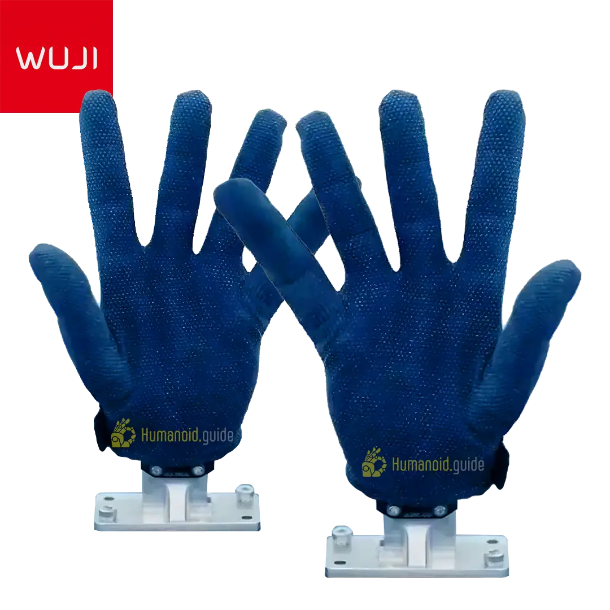
20 DOF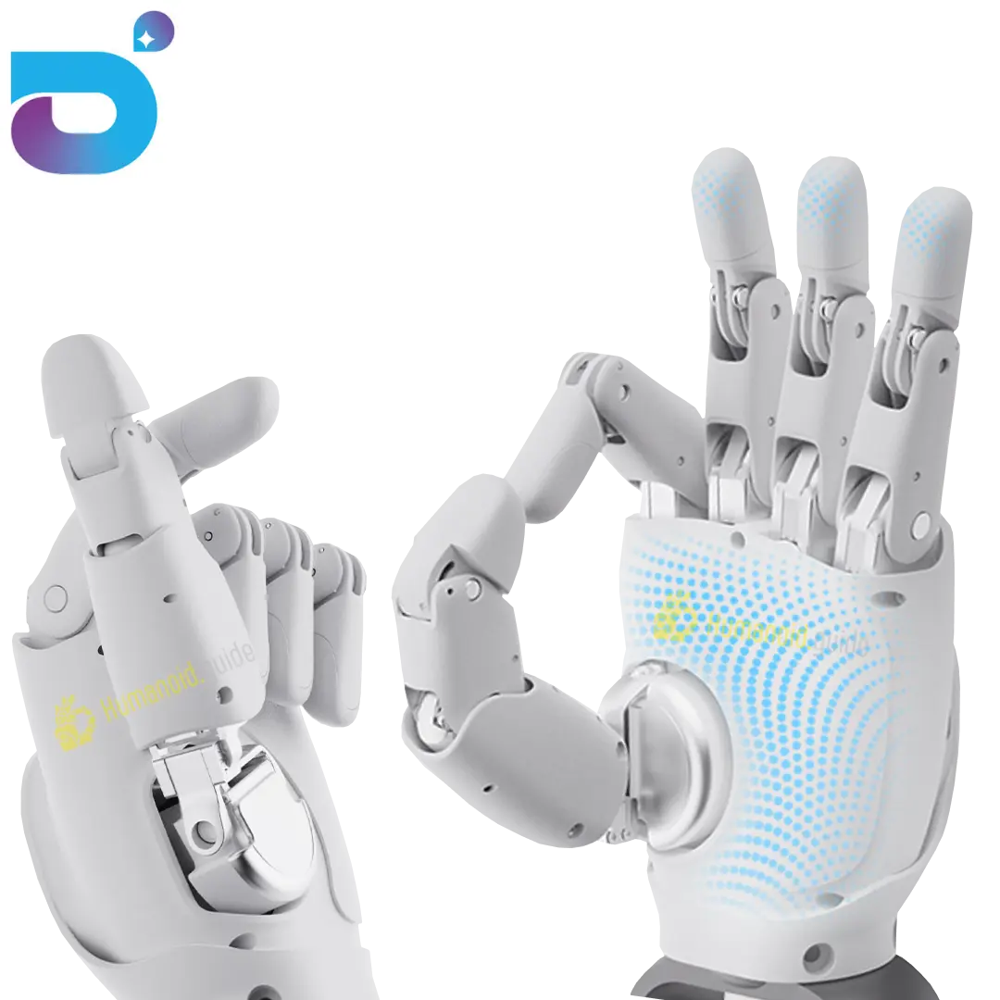
22+ DOF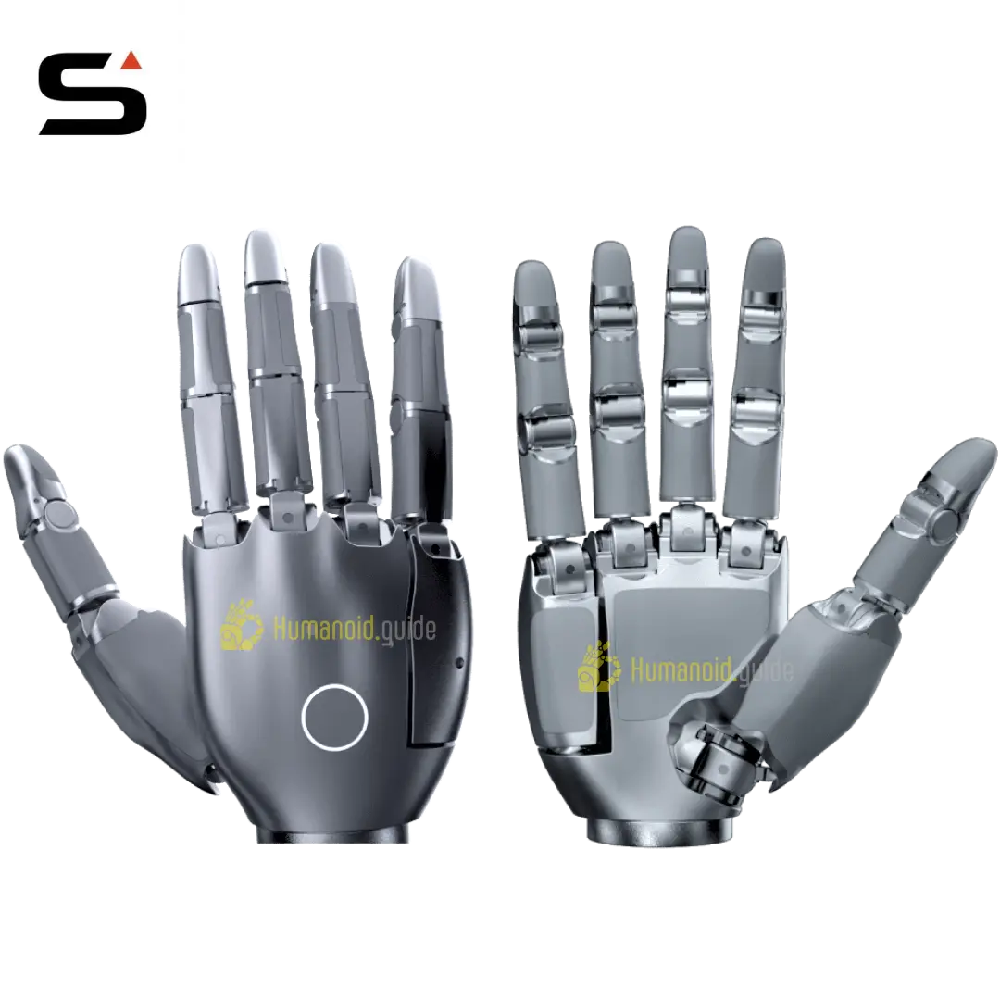
22 DOF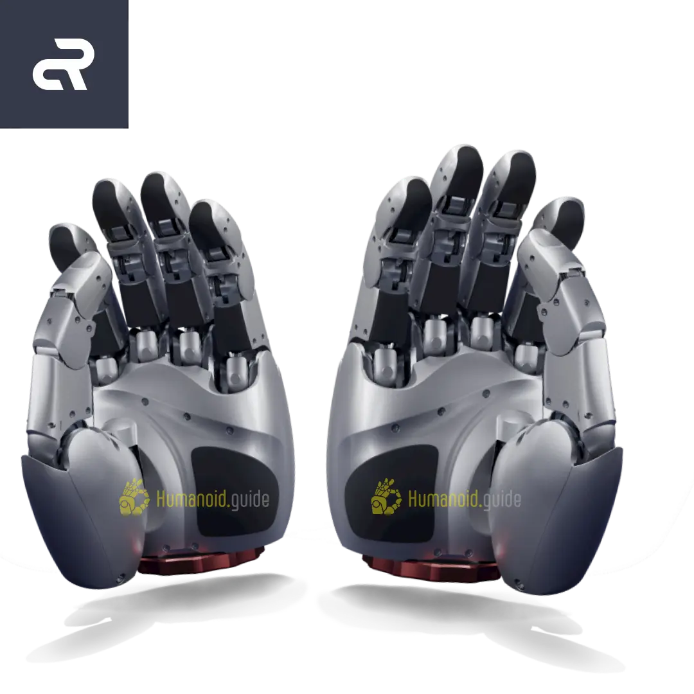
16 DOF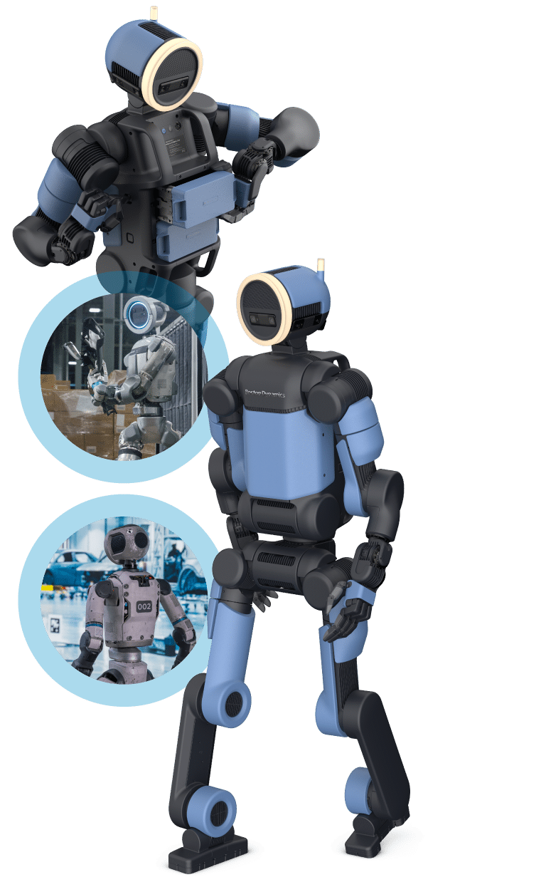
7 DOF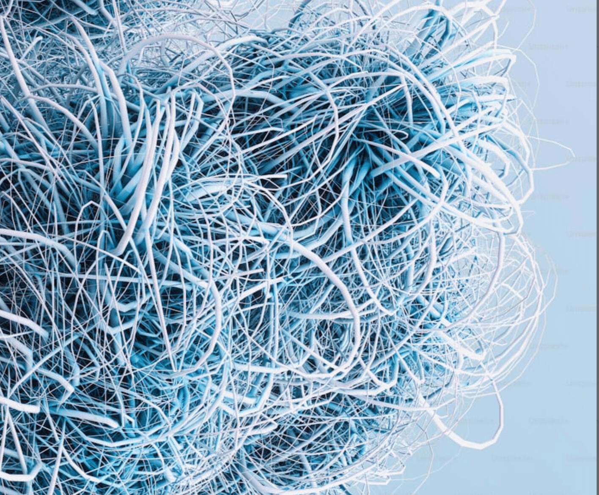
120 驱动器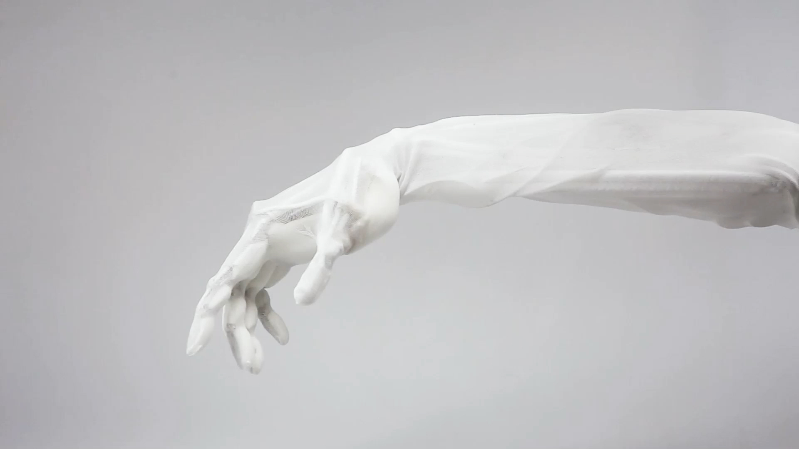
27 DOF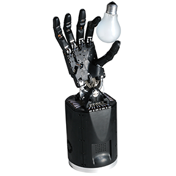
20 DOF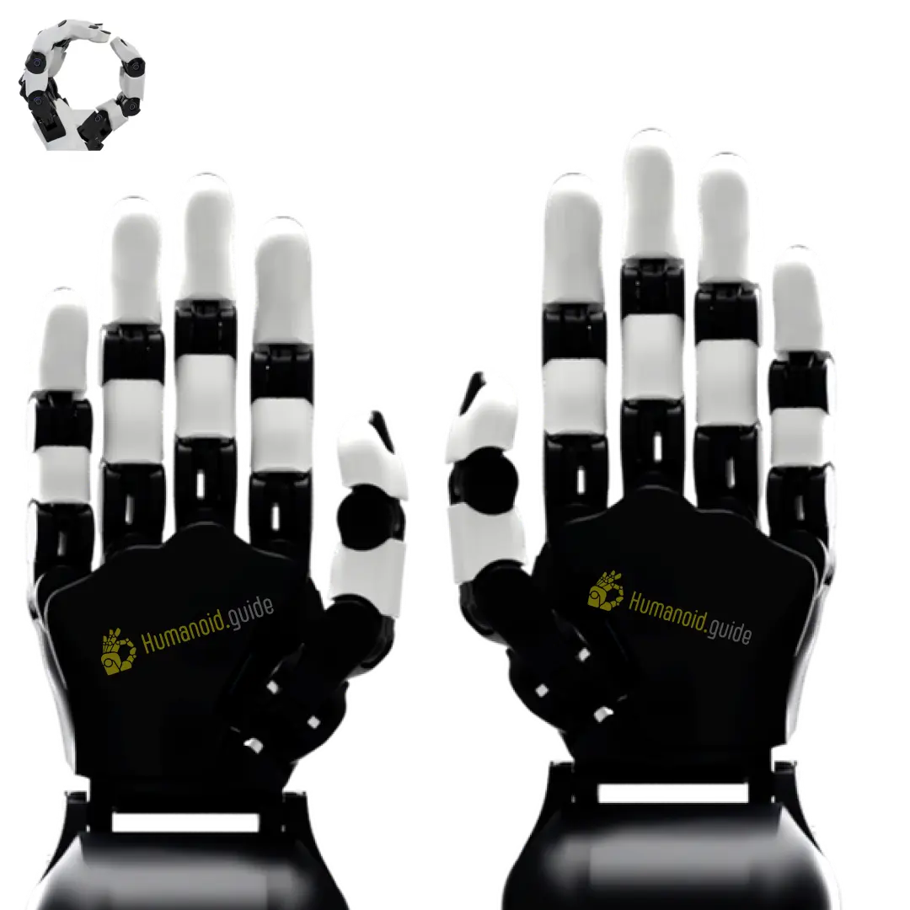
17 DOF规格均来自厂商或论文报告 —— 应视为有待独立验证的声明。完整细节、来源与更多型号见 第一卷 →
三篇综述，每一篇都是独立完整的单页。规格与价格均来自厂商或论文报告，应视为有待独立验证的声明。
跨越三条产品线的 20+ 款灵巧手——商用专业厂商、人形机器人集成末端执行器，以及前沿研究／开源／仿生的边界。从自由度(DOF)、驱动拓扑、触觉栈到产品理念逐一对比，并附有图片与厂商链接。
该领域可购买的一端：14 款你真正能下单的灵巧手，附产品图、手指／自由度(DOF)数量、产地与参考价格——从 $2k 的开源套件到 $110k 的研究基准。每一行均附来源链接。
灵巧性的评估一面——用于衡量手内操作与抓取的仿真套件、真实世界任务集与数据集。它是将硬件声明转化为可比数字的基底。